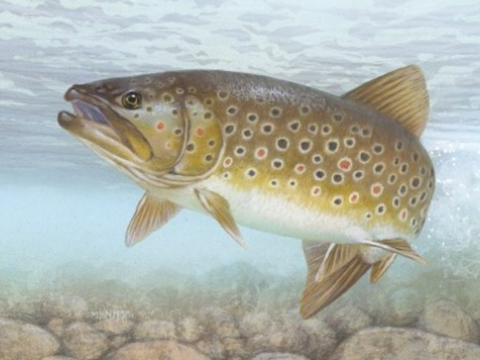

14Ноябрь
Операторы ЗАО «Лесозавод 25» прошли обучение новейшей системе сортировки пиломатериалов в Финляндии
Операторы третьего участка ЗАО «Лесозавод 25» прошли обучение в компании FinScan (Финляндия) новейшей системе сортировки пиломатериалов BoardMasterNOVA, говорится в сообщении пресс-службы компании. В сообщении отмечается, что данная система позволяет производить сортировку пиломатериалов в соответствии с существующими в мире стандартами (в том числе, используемыми на ЗАО «Лесозавод 25», - ГОСТ 26002-83 и BS EN 14081-1-2005). Главной задачей двухдневной программы обучения стало повышение уровня квалификации персонала в связи с проводимой на участке коренной модернизацией оборудования.
13Ноябрь
Стали известны победители лесопромышленной премии Lesprom Awards-2017
Оргкомитет Всероссийской лесопромышленной премии Lesprom Awards объявил победителей 2017 года. В номинации «Зеленая энергия» победу одержало ЗАО «Лесозавод 25» за проект запуска новой котельной на кородревесных отходах. 2Ноябрь
2Ноябрь
На третьем участке ЗАО «Лесозавод 25» начались пуско-наладочные испытания новой линии сортировки пиломатериалов
На третьем участке ЗАО «Лесозавод 25» (входит в ГК «Титан») началась пуско-наладка новой линии сортировки сухих пиломатериалов Springer Maschinenfabrik AG (Австрия), стоимость объекта составляет 570 млн руб.

31Октябрь
В реку Онега выпущено более 20 тысяч особей молодой форели
В течение октября этого года состоялся ряд мероприятий по выпуску в реку Онега молоди кумжи (форели), выращенной на Солзенском производственно-экспериментальном заводе Северного филиала ФГБУ «Главрыбвод». Как сообщила министр АПК и торговли Архангельской области Ирина Бажанова, выпуск молодой форели в Онегу относится к разряду компенсационных мероприятий. Их заказчиками выступили экологически ответственные предприятия региона: АО «Архангельский ЦБК», ЗАО «Лесозавод 25» и ООО «Севзапдорстрой».
26Октябрь
Лесные пожарные поделились с архангельскими школьниками секретами профессии
Эколята-второклассники архангельской школы № 55 побывали в гостях у сотрудников Единого лесопожарного центра. Экскурсию для ребят организовали министерство природных ресурсов и ЛПК области, АРО ПЭФ «Биармия» ЗАО «Лесозавод 25». Местом проведения необычного урока стала пожарно-химическая станция Архангельского подразделения ЕЛЦ. 12Октябрь
12Октябрь
На Набережной Северной Двины появились скамейки в поморском стиле
Пусть медленно, но верно Архангельск становится более ухоженным и комфортным для горожан. Сегодня на набережной напротив главного корпуса САФУ установили новые удобные скамейки. Это подарок городу от группы компаний "Титан". Такие же скамейки установили на острове Краснофлотский, у торгово-развлекательного комплекса «Макси», в Ломоносовском парке. Изготовили такие малые архитектурные формы на 25-м лесозаводе, и это - третья партия. 10 похожих скамеек уже установлены на острове Краснофлотском, ещё несколько - на Ленинградском проспекте. 10Октябрь
10Октябрь
Главный драйвер роста ЛПК
Главный драйвер роста ЛПК: Как и в прошлом году, в тройке лидеров - ГК «Титан». По словам директора по экспорту «Лесозавода 25» Михаила Крымшамхалова, экспорт пиломатериалов достиг таких показателей благодаря слаженной работе всего холдинга. «Прежде всего ПКП «Титан» вместе с заготовительными предприятиями группы обеспечили наши заводы сырьем в достаточном объеме, что позволило нам отработать полугодие без вынужденных простоев и достичь запланированных производственных показателей», – делится он. Как отметил Михаил Крымшамхалов, на всех рынках наблюдался стабильный спрос и рост цен на пиломатериалы, что способствовало ритмичным отгрузкам продукции
6Октябрь
WWF России и «Титан» согласовали границу Двинско-Пинежского заказника
Часть арендованной Группой компаний «Титан» территории Двинско-Пинежского лесного массива вдоль всей южной границы аренды будет включена в заказник. К такому соглашению пришли представители холдинга и WWF России в ходе рабочей встречи.
5Октябрь
ЗАО «Лесозавод 25» — успешно реализует природоохранный социально-образовательный проект «Эколята».
В Год экологии и особо охраняемых природных территорий крупнейший лесопильный комплекс в Европейской части России - ЗАО «Лесозавод 25» - успешно реализует природоохранный социально-образовательный проект «Эколята». Как рассказала начальник Службы экологии предприятия Ксения Мальцева, при поддержке НП «Русская Арктика» компания работает по всероссийскому проекту с учениками второго класса МБОУ «Средняя Школа №55 им. героя РФ А. И. Анощенкова».
4Октябрь
ЗАО «Лесозавод 25″ продает оборудование лесопильного цеха
ЗАО «Лесозавод 25» продает оборудование лесопильного цеха, состоящего из четырех лесопильных потоков. Три рамных потока в составе: окорочные станки Валон Коне VK-26, двухэтажных лесопильные рамы 2Р-75-1 и Р-75-1А, фрезерно-обрезные станки Ц2Д1Ф, Ц2Д8. Агрегатная линия распиловки в составе: окорочные станки Валон Коне VK-26, фрезерно-брусующий станок ФБС-750 многопильный станок СБ-8М.
3Октябрь
ПРОИЗВОДИТЕЛЬ ТОПЛИВНЫХ ГРАНУЛ ИЗ АРХАНГЕЛЬСКОЙ ОБЛАСТИ ВОШЕЛ В РЕЙТИНГ 200 КРУПНЕЙШИХ ЭКСПОРТЕРОВ СТРАНЫ
ЗАО «Лесозавод 25» - самое крупное лесопильное предприятие в Европейской части России. Предприятие производит экспортные пиломатериалы камерной сушки, а также технологическую щепу и древесные гранулы. 90% продукции завода идет на экспорт в европейские страны, рынки Египта и Китая. С учетом запуска третьего участка ЗАО «Лесозавод 25» - ОАО «ЛДК-3» объемы переработки сырья составляют 1,5 млн кубометров в год, производства пиломатериалов – около 700 тысяч кубометров, производства пеллет — 200 тысяч тонн. Основными источниками информации при построении ранжированного списка стали данные таможенной статистики, отчеты компаний и данные анкетного опроса.
21Сентябрь
Группа компаний «Титан» вошла в 200 крупнейших экспортеров России
Группа компаний «Титан» вошла в рейтинг «200 крупнейших экспортеров России», подготовленный журналом «Эксперт». В ранжированном списке компания заняла 138 место. В холдинг входит ЗАО «Лесозавод 25» – самое крупное лесопильное предприятие в Европейской части России. Предприятие производит экспортные пиломатериалы камерной сушки, а также технологическую щепу и древесные гранулы. 90% продукции завода идет на экспорт в европейские страны, рынки Египта и Китая. С учетом запуска третьего участка ЗАО «Лесозавод 25» – ОАО «ЛДК-3» объемы переработки сырья составляют 1,5 миллиона кубометров в год, производство пиломатериалов – около 700 тысяч кубометров, производство пеллет – 200 тысяч тонн. Основными источниками информации при построении ранжированного списка стали данные таможенной статистики, отчеты компаний и данные анкетного опроса.
21Сентябрь
Иностранные журналисты побывали на 25-м архангельском лесозаводе
Иностранные журналисты побывали на 25-м архангельском лесозаводе. 20 сентября делегация иностранных журналистов посетила Цигломенский участок ЗАО "Лесозавод 25". Экскурсию СМИ по основным производственным объектам провел генеральный директор предприятия Дмитрий Крылов. Отвечая на вопрос шеф-редактора телевидения Румынии Левью Юреа о позиционировании компании на российском рынке, Дмитрий Крылов рассказал, что "Лесозавод 25" сегодня является самым крупным лесопильным предприятием в Европейской части России.
18Сентябрь
Наградили работников ЛПК
Лучших представителей лесной отрасли сегодня отметили благодарностями и почетными грамотами губернатора Архангельской области. Почетные грамоты из рук губернатора Игоря Орлова получают инженеры, эксперты, лесничие и руководители крупных предприятий. Лесозавод № 25 существует уже более века. Николай Булавин трудится на этом предприятии 18 лет и гордится, что родное производство все время развивается и модернизируется. Исполнительный директор ЗАО «Лесозавод 25» Николай Булавин: «Мы занимаемся перевооружением, модернизацией предприятия. Переходим на новые, высокие технологии лесопиления, где позволяем нашим работникам получать достойную зарплату. Позволяем выпускать очень качественную продукцию европейского стандарта».
18Сентябрь
Стремящиеся к развитию
Кластер Архангельской области «ПоморИнноваЛес» объединил предприятия с общими целями и производственными задачами Идея создания первого в области лесопромышленного кластера принадлежит руководителям Архангельского ЦБК, ЗАО «Лесозавод 25» и группы компаний «Титан».
9Август
На ЛДК-3 запустили современный лесопильно-деревообрабатывающий комплекс
Модернизация третьего производственного участка ЗАО «Лесозавод 25» (входит в ГК «Титан») увеличит объём переработки сырья до 1,5 миллиона кубометров в год. — Сегодня мы с гордостью представляем вам результат первого этапа модернизации производственной площадки 25-го лесозавода на базе участка ЛДК-3, — рассказал на открытии комплекса генеральный директор ЗАО «Лесозавод 25» Дмитрий Крылов. — Этот этап включает в себя запуск линии сортировки пиловочника, абсолютно нового лесопильного цеха, котельной на кородревесных отходах. Второй этап модернизации — это строительство сушильных камер и линии сортировки сухих пиломатериалов. 9Август
9Август
В Архангельске запустили новое лесопильное производство
Губернатор Архангельской области Игорь Орлов и гендиректор ЗАО «Лесозавод 25» Дмитрий Крылов дали старт работе нового лесопильного цеха в Маймаксанском округе столицы Поморья. Участие в торжественном открытии приняли гендиректор Группы компаний «Титан» Алексей Кудрявцев, глава администрации Архангельска Игорь Годзиш и председатель комитета по природопользованию и ЛПК областного Собрания депутатов Александр Дятлов.
19Июль
«Лесозавод 25» стал лучшим предприятием лесного комплекса Архангельской области в сфере деревообработки
ЗАО «Лесозавод 25» победил в областном конкурсе «Лучшее предприятие лесного комплекса в Архангельской области» в номинации «Лучшее деревообрабатывающее предприятие». Диплом третьей степени (III место) получил ОАО «Архангельский лесопильно-деревообрабатывающий комбинат №3». Победители определяются по итогам работы за предыдущий год. Учитывается ряд показателей, в том числе, рост объемов отгруженных товаров, заготовки древесины, выполнение мероприятий по охране, защите и воспроизводству лесов, уровень среднемесячной зарплаты и уровень травматизма на производстве, отсутствие задолженности в бюджеты Архангельской области и Российской Федерации, а также во внебюджетные государственные фонды.
6Июль
Проекту «Лесозавод 25» присвоен статус приоритетного инвестиционного проекта в области освоения лесов
Проекту ЗАО «Лесозавод 25» – «Строительство лесопильно-деревообрабатывающего комплекса в Маймаксанском округе Архангельска, ул. Родионова 25» на базе производственной площадки ОАО «ЛДК-3» – присвоен статус приоритетного инвестиционного проекта в области освоения лесов. Соответствующий приказ (№ 2150) подписан министром промышленности и торговли РФ Денисом Мантуровым 05 июля 2017 года. 5Май
5Май
На ЛДК-3 начались пусконаладочные испытания лесопильной линии
Как рассказал генеральный директор ЗАО «Лесозавод 25» Дмитрий Крылов, запуск объекта запланирован на начало июня. Здание цеха готово, завершён монтаж кровельных панелей и работы по обвязке технологического оборудования котельной на древесных отходах. Вышли на финишную прямую работы по устройству фундамента линии сортировки сухих пиломатериалов и блока сушильных камер.
8Февраль
Модернизация ЛДК-3 удвоит его производительность
Руководство группы компаний «Титан» и «Лесозавода 25» поделилось с журналистами своими планами по модернизации старейшего лесопильного комплекса Архангельска. «Лесозавод 25», входящий в состав группы компаний «Титан», приобрел ЛДК-3 еще полтора года назад. В этом году формально сделка завершится – пакеты акций будут консолидированы в руках одного собственника. Однако, новому владельцу столь продолжительная процедура оформления покупки не помешала еще в прошлом году приступить к модернизации предприятия. Сегодня ЛДК-3 работает по устаревшей рамной технологии лесопиления и производит около 250 тысяч кубометров продукции. Однако в 2017 год завод вошел с развернутым проектом модернизации, после завершения которого в Маймаксе появится один из самых современных в Европе лесопильных комплексов, который станет третьей производственной площадкой «Лесозавода 25».
8Февраль
На ЛДК-3 полным ходом идёт модернизация производства
Новая линия сортировки брёвен и котельная на кородревесных отходах будут запущены уже весной, а новый лесопильный цех заработает 1 июля. На площадке ЛДК-3 — третьего производственного участка ЗАО «Лесозавод 25» (входит в ГК «Титан») — сверхбыстрыми темпами идёт строительство нового лесопильно-деревообрабатывающего комплекса. Ещё летом прошлого года руководство предприятия лишь заявляло о планах модернизации и объёмах инвестиций. Сегодня выполнена уже большая часть работы в рамках первого этапа модернизации производственного участка. Первый этап предусматривает строительство современной линии сортировки брёвен австрийского производства, лесопильного цеха мощностью 550 тысяч кубометров пиловочника в год и котельной, которая будет полностью обеспечивать потребности завода в тепле. На втором этапе модернизации запланирована установка новых сушильных камер и новой линии сортировки сухих пиломатериалов. В настоящий момент готовятся фундаменты под оборудование. С мая по декабрь 2017 года будет осуществлён его монтаж и пусконаладка.
8Февраль
Год экологии в Поморье: конкретные дела по улучшению качества жизни северян
Официальный старт Году экологии и особо охраняемых природных территорий в Поморье дал губернатор Архангельской области Игорь Орлов. ЗАО «Лесозавод 25» планирует два проекта, направленных на улучшение экологической ситуации: строительство водогрейной котельной на кородревесных отходах (котлы будут оборудованы системами, которые позволят минимизировать загрязнение атмосферы); внедрение линии сухой сортировки пиловочного сырья, в результате чего будет прекращён сброс отходов в протоку Маймакса бассейна реки Северная Двина.
27Декабрь
АО «Архангельский ЦБК», ЗАО «Лесозавод 25» и ГК «Титан» поддерживают создание заказника в междуречье Северной Двины и Пинеги
АО «Архангельский ЦБК», ЗАО «Лесозавод 25» и ГК «Титан» как экологически ответственные лесопромышленные компании Поморья поддерживают создание заказника в междуречье Северной Двины и Пинеги в согласованных с международными природоохранными организациями границах.
24Ноябрь